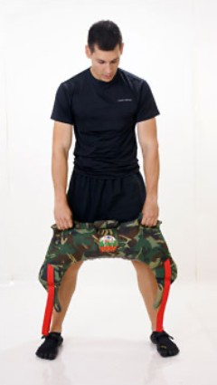
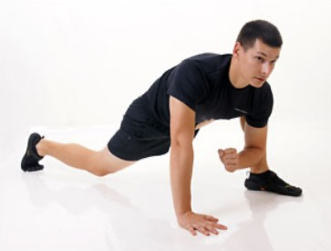

Personal Training

Personal Training ist die individuellste Form des Fitnesstrainings.
Sie können während Ihrer Übungsstunde die volle Aufmerksamkeit eines Sport-Spezialisten genießen, der Ihnen nach einem intensiven Eingangsgespräch und der Festlegung Ihrer Ziele bereits die ersten Vorschläge für das zukünftige gemeinsame Training macht. Wenn Gewichtsreduktion ein Thema für Sie ist, gibt es auf Wunsch Ernährungstipps.
Es gibt bei mir keine vorgefertigten Standardtrainingspläne, die über mehrere Wochen abgearbeitet werden. Ich lege großen Wert auf sich ständig ändernde Trainingsinhalte. Sie erwartet ein Training, das jedes Mal eine neue Herausforderung darstellt.
„Wer rastet, der rostet“
Wem es schwerfällt, sich selbst zu überwinden und die Trainingshosen anzuziehen, ist im 1:1 Training bestens aufgehoben. Wir werden Ihren inneren Schweinehund gemeinsam besiegen. Wenn wir einen Termin haben, steuere ich fachmännisch und mit viel Spaß Ihr Training.
Funktionelles Training

Das Funktionelle Training ist die Folge neuester Erkenntnisse der Trainingswissenschaft.
Diese Art des Trainings wird in Rehabilitation wie auch Leistungssport angewandt und stellt wegen seiner Effektivität und Ganzheitlichkeit die Zukunft des leistungsorientierten Trainings dar.
Das traditionelle Krafttraining an Geräten stellt in Bezug auf seine Funktionalität und Stabilisierung wenige Ansprüche an den Trainierenden. Die Trainingsmaschinen übernehmen zu einem großen Teil die Stabilisierung für den Aktiven, da das Gewicht auf einer fest vorgegebenen Bahn bewegt wird. Dies ist nicht funktionell, weil jeder Athlet bei der Ausübung seiner Sportart selbst für die Stabilität im Bewegungsablauf sorgen muss.
Funktionelles Training besteht überwiegend aus Übungen, bei denen der Athlet mit beiden Füßen auf dem Boden steht und nicht von einem Kraftgerät gestützt wird. Er lernt dabei, sein eigenes Körpergewicht zu halten und in allen Ebenen zu stabilisieren. Die Übungen verbessern die Kraft, Schnellkraft, Koordination, Balance und Eigenstabilität schon nach kurzer Zeit, was insbesondere ältere Menschen wieder tritt- und alltagssicherer macht.
Jede Übung beim Funktionellen Training verbessert zugleich die Stabilität und Beweglichkeit des Rumpfes, unseres Kraftzentrums (Core), von dem alle Bewegungen ausgehen, sowie die Koordination, Reaktionszeit und das Gleichgewicht des Sportlers. Der Athlet trainiert nicht einzelne Muskeln, sondern Bewegungen, die ganzheitlich den Körper fordern, und dies macht das Training so effektiv.
Typische Bewegungsmuster der jeweiligen Sportarten, wie zum Beispiel Golf, Tennis, Ballspiele, werden perfektioniert und Schwächen gezielt behoben, wodurch auch Verletzungen vorgebeugt wird.
In unserem Training nehmen wir Bezug auf Fitnessprogramme wie z. B. CrossFit, HIIT, Core-Performance und Tabata Intervalltraining.
Trainingsübungen aus den verschiedensten Sportarten werden verwendet (z. B. Gewichtheben, Kettlebellsport, Turnen, Leichtathletik, Radfahren, Rudern, Joga, Schwimmen und vieles mehr).
Der Alltagsbezug und die daraus folgenden Vorteile der oben genannten traditionellen Sportarten und Trainingsübungen gegenüber dem Training an Geräten liegen auf der Hand: Die körperliche Fitness und Leistungsfähigkeit wird ganzheitlich ausgebildet, sie ist im täglichen Leben besser einsetzbar.
Eine Trainingseinheit durchläuft verschiedene Phasen
- 1
Aufwärmen
- 2
Flexibilität und Koordination
- 3
Workout
- 4
Regenerationsphase